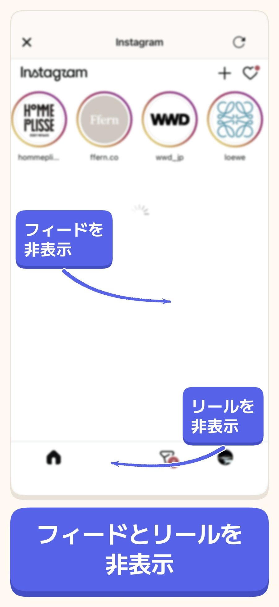
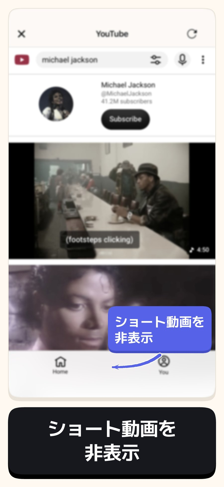
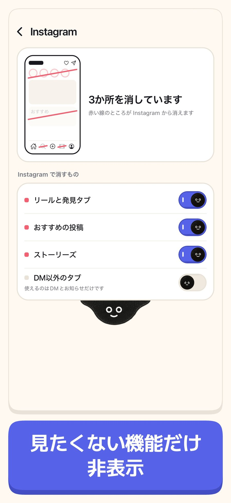
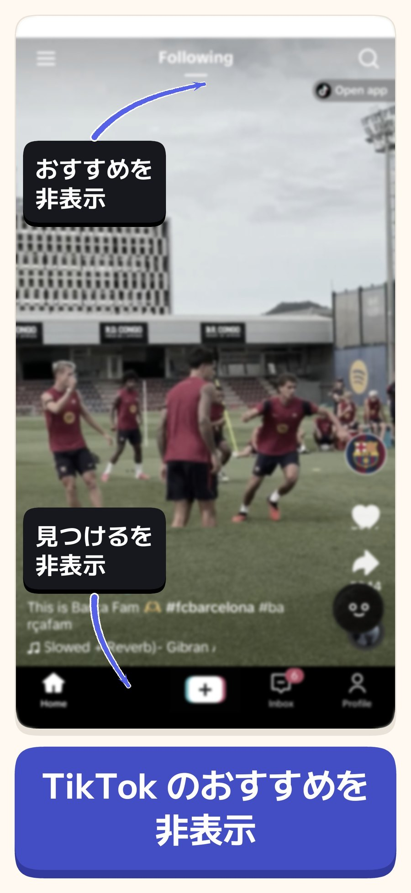
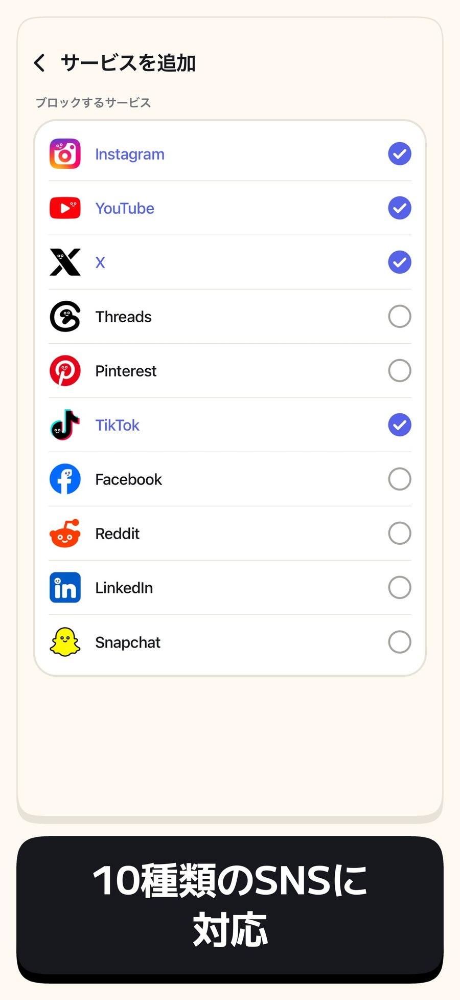
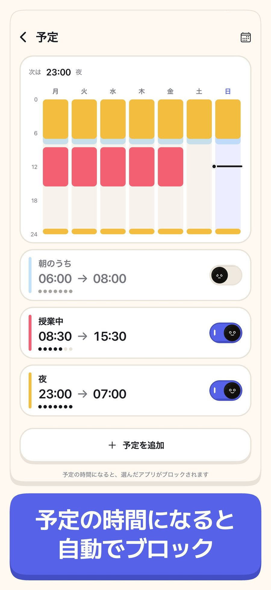
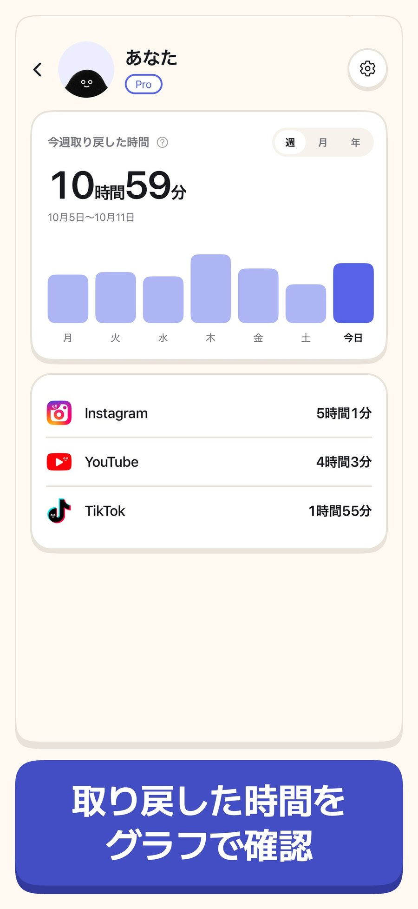
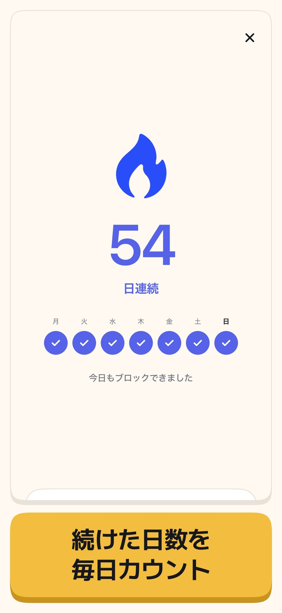
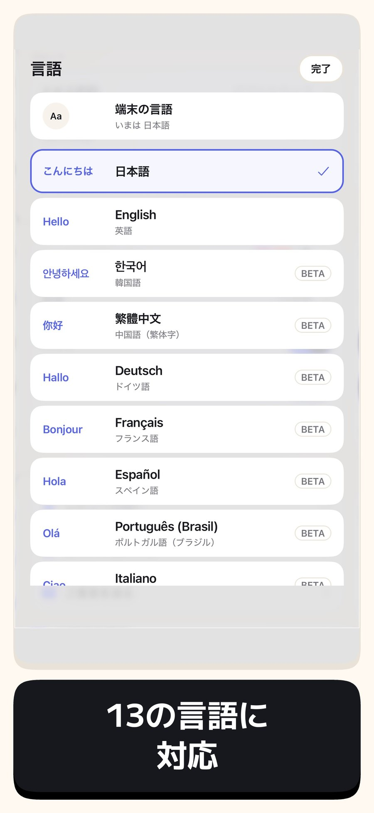

minulo プレスキット
minulo（ミヌロ）は、Instagram のリール、YouTube のショート、TikTok のおすすめ、おすすめ投稿だけを消す iPhone アプリです。DM や友だちの投稿は、いつもどおり使えます。多くのブロックアプリはアプリごと止めるので、連絡まで使えなくなります。minulo は必要なところは残し、見続けさせるためのフィードだけを消します。
2026年10月13日 更新
- アプリ名
- minulo（旧名 FeedMinus）
- 対応
- iPhone（iOS）
- 公開
- 2026年9月
- 料金
- ダウンロード無料。リール・ショート・おすすめ投稿を消すのは無料。続けるための仕組みは Pro（月額・年額。年額は7日間の無料体験つき。価格は App Store に表示）
- 使える SNS
- Instagram、YouTube、TikTok、X、Threads、Facebook、Reddit、Snapchat、Pinterest、LinkedIn
- 言語
- 13言語（日本語・英語・韓国語・繁体字中国語・ドイツ語・フランス語・スペイン語・ポルトガル語・イタリア語・インドネシア語・タイ語・ベトナム語・ロシア語）
- プライバシー
- ログインは各 SNS の公式ページで行い、minulo はパスワードや DM の中身を受け取りません。公式アプリを止めるのは Apple のスクリーンタイムの仕組みで、どのアプリを選んだかは開発者にも見えません。
- 開発
- 北林 歩（日本で一人で開発）・運営 リリーフノート
- 連絡先
- workflowai.japan@gmail.com
- リンク
- App Store · サイト · よくある質問 · SocialLite との違い
しくみ
minulo の中で Instagram や YouTube を開くと、リール・ショート・おすすめ・おすすめ投稿が消えた状態で表示されます。DM、友だちの投稿、検索、投稿はそのまま使えます。スクリーンタイムを許可すると、選んだ公式アプリも止められます。ホーム画面で Instagram を押すと、リールのない minulo の画面に着きます。DM で届いたリールは入口で止まり、どうしても見たいときは「5分だけ開く」を選べます。
作ったきっかけ
DM を1通返すつもりで Instagram を開いたのに、気づくと30分リールを見ていた。友だちも仕事の連絡も SNS にあるので、やめることはできない。それなら、SNS は残して無限スクロールだけをやめよう、と作ったのが minulo です。
画面


画面 1

画面 2

画面 3

画面 4

画面 5

画面 6

画面 7

画面 8

画面 9ロゴとアイコン
アプリのアイコン（PNG） · ロゴ（PNG） · バナー 1200×630（PNG）


App Store に載せている画面（日本語）です。minulo を紹介するときは、これらの画像を自由にお使いください。画面に映る SNS の名前やロゴは、それぞれの持ち主のものです。